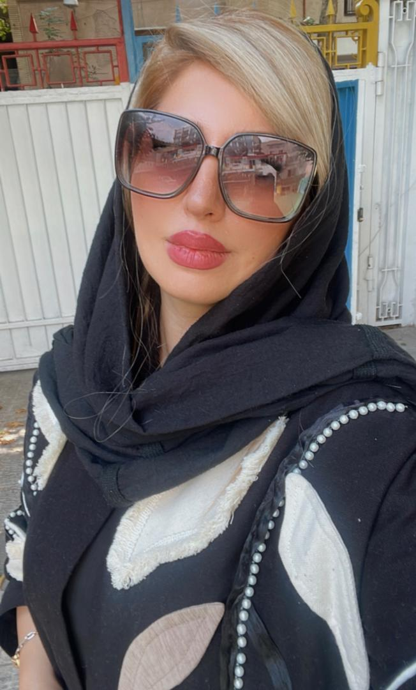

سلام!
مامان عزیزم این صفحه تقدیم به تو
وقتی چشم به جهان گشودم قلب کوچکم مهربانی لبخند و نگاهت را که پر از صداقت و بیریایی بود احساس کرد. دیدم زمانی را که با لبخندم لبخند زیبایی بر چهره خستهات نشست و دنیایت سبز شد و با گریهام دلت لرزید و طوفانی گشت. از همان لحظه فهمیدم که تنها در کنار این نگاه پر مهر و محبت است که احساس آرامش و خوشبختی خواهم کرد.
